图 18.11 潜在的致癌剂 (a) 全美每千人的癌症患者数不尽相同。在城市和密西西比三角洲的患病率较高，表明污染和杀虫剂的排放可能成为致癌因素。(b) 全美死亡率最高的癌症之一大肠癌在其他很多国家不常见。大肠癌的发生可能与肉食消耗量有关：高肉食含量的饮食减慢食物通过小肠的速度，延长了小肠壁暴露在消化废物环境中的时间。(c) 最危险的癌症是肺癌，引发肺癌的罪魁祸首是香烟烟雾。不同国家 35～44 年龄段男性的肺癌患者数与该国家 20 年前香烟消耗量直接相关。
图 18.1 癌症 致命癌细胞的扫描电子显微镜照片 (8000×)。
总体来说，遗传信息的改变主要通过两种途径：突变和重组。突变是指遗传信息的内容发生改变，也就是一个或者更多基因的碱基序列改变。有的突变使某个特定的核苷酸发生变化，还有的突变增加或减少基因中的核苷酸数目。重组是部分遗传信息的位置发生变化。有的重组将一个基因移动到另一条不同的染色体上；有的则仅仅改变一个基因中一部分碱基序列的位置。在这一章，首先以癌症为例介绍基因突变（图 18.1），然后讨论重组，重点放在重组是如何影响真核生物基因组结构的。
真核生物的细胞含有大量 DNA。如果把一位成年人体内所有细胞中的 DNA 头尾相接地连接起来，总长度接近 1000 亿公里，是地球到木星距离的 60 倍！任何多细胞生物的 DNA 都是从一个细胞——受精卵开始，经过长期连续复制而形成的。在漫长的进化历程中，生物体利用很多不同的机制避免 DNA 复制过程发生错误，保护 DNA 免受损害。其中包括一些校读机制，检查 DNA 复制链是否准确，更正出现的任何错误。然而，校读机制并不是完美无缺的，因为如果真这样，基因的核苷酸序列将不会出现任何变异。
事实上，在复制过程中细胞的确会犯错误，并且对遗传信息的破坏也会发生，从而导致突变 (mutation)（图 18.2）。但是，突变发生的几率很小，一般情况下，每一百万个配子中只有一个配子中的某个特定基因发生变异。假如突变经常发生的话，DNA 编码的遗传信息将很快变得面目全非而显得毫无意义。因此，从一定意义上来讲，进化的实质就是遗传信息发生稳步而缓慢的变化。不同物种间遗传信息的每个差异都是基因改变的结果。
所有进化都源于遗传信息的的变化：突变产生新的等位基因。基因转移 (gene transfer) 和转座 (transposition) 改变基因的位置；相互重组 (reciprocal recombination) 将这些变化进行改组和分选，染色体重排改变整个染色体上的基因结构。在种系组织 (germ-line tissue) 中发生的一些突变能使生物体保留更多后代，并且这些突变趋于在下一代中保存和延续下去。还有一些突变使生物体的繁殖能力下降，后代数量减少。那么这些突变就会因为携带这些突变个体的后代数目越来越少而逐渐消失。
进化可以看作是从变异库中选择某些特定的等位基因的组合。进化的速度最终受到变异产生速度的限制。通过突变和重组而产生遗传信息的改变为进化提供了原材料。
体细胞的基因变化不能传递给后代，因此不像生殖细胞突变那样会对进化造成很大影响。不过体细胞的变异往往有“立竿见影”的效果，尤其是当发生突变的基因影响个体发育或者与调控细胞增殖有关的时候。
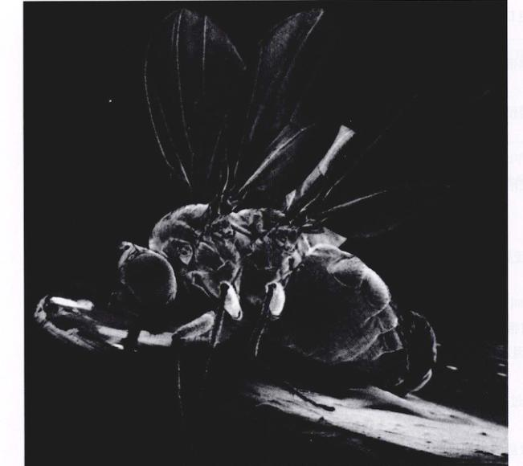图 18.2 突变 正常果蝇胸部长有一对翅膀，这是一只突变型果蝇，因为一个调控发育的关键基因“双胸基因 (bithorax)”发生突变。这只果蝇有两个胸节，因此长有两对翅膀。
偶尔发生的基因改变称为突变，若发生在体细胞，将对个体产生重大影响；只有发生在生殖组织中的突变才能遗传。能遗传的突变为进化提供了原材料。
由于突变可能随机发生在细胞 DNA 上的任何地方，因此突变的结果可能是有害的，正如随意改动计算机程序或者音乐乐谱将破坏程序的运行、乐谱的演奏一样。
有害突变的结果对机体来讲可能是微不足道的，也可能是灾难性的，这取决于发生突变的基因执行什么功能。
突变产生的影响关键取决于发生突变的细胞是什么性质的。当多细胞生物还处于胚胎发育时期时，就出现了体细胞 (somatic cell) 和生殖细胞 (germ-line cell) 的分化。生殖细胞将来发育成配子，体细胞将来发育成机体的其他细胞。只有突变发生在生殖细胞中，突变才能通过配子传递到后代，才能被一代一代地遗传下去。
自然选择通过突变促使进化不断进行下去，生殖细胞的突变为自然选择提供了原材料，因而具有重要的生物学意义。只有存在的、不同的等位基因组合来取代旧的等位基因，具有进化意义的变化才会发生。突变产生新的等位基因，而重组将全部的等位基因以新的方式组合起来。在动物中，发生在生殖细胞中的突变和重组对进化有重要意义，而体细胞突变 (somatic mutation) 不能世代相传下去。但是，体细胞突变可能对发生突变的个体有重大影响，这是因为突变被最初发生突变的细胞传递给了机体的所有子细胞。因此，假如一个突变的肺组织细胞发生分裂，所有分裂而成的新细胞都将携带这种突变信息。我们即将看到，发生在肺组织的这种突变是引发肺癌的主要原因。
这一类突变作用于遗传信息本身，改变 DNA 中的核苷酸序列（表 18.1 归纳了突变的来源和类型）。如果这种突变仅仅涉及一个或者几个起编码作用的碱基对，叫做点突变 (point mutation)。其中一些点突变是由 DNA 复制过程中自发的碱基配对错误引起的，另一些是由辐射、化学物质等诱变剂 (mutagen) 对 DNA 造成损害而引起。
| 突 变 | 举 例 |
|---|---|
| 无突变 | |
| B 基因编码正常的 B 蛋白 | |
| 点突变 | |
| 碱基替换 | 替换一个或几个碱基。氨基酸的改变导致 B 蛋白失活。 |
| 插入 | 插入一个或几个碱基。插入序列破坏 DNA 的正常结构，导致 B 蛋白失活。 |
| 缺失 | 缺失一个或几个碱基。蛋白质部分缺失导致 B 蛋白失活。 |
| 基因位置的变化 | |
| 转座 | 由于基因位置的改变，B 基因或 B 蛋白的调控有所不同。 |
| 染色体重排 | 在染色体的新位置上 B 基因可能失活或调控变化。 |
的。后者有很重要的实际意义，因为现代化工生产经常把这些引发突变的化学物质排放到自然界中去。
另一类突变影响遗传信息的组织方式。在细菌和真核生物中都可以通过转座 (transposition) 把基因从染色体上的一个位置转移到另一个位置。当一个特定的基因转移到别的位置时，它表达或者和它相邻基因的表达可能发生改变。此外，真核细胞中的染色体可以大段地改变相对位置或者发生重复，这种染色体重排 (chromosomal rearrangement) 会对遗传信息的表达产生重大影响。
(1) 电离辐射：高能量的辐射形式，如 X 射线、γ 射线，很容易诱发基因突变。当细胞受到这种高能射线照射时，细胞中的原子吸收射线中的能量，把它传递给核外电子。受到激发的核外电子脱离原子核的束缚而跑到原子之外，失去核外电子的原子由于所带电量不再为零，而成为携带不成对电子的自由基 (free radicals)。自由基的化学性质非常活泼，很容易与包括 DNA 在内的其他分子发生反应。
当自由基把 DNA 双螺旋中的两个磷酸二酯键 (phosphodiester bonds) 都打开时，会引起双链断裂 (double-strand break)。细胞中存在的一般突变修复酶对这种损伤束手无策。在磷酸二酯键重新形成的同时，断裂形成的两条单链必须排列在一起。细胞缺少这种断链排列机制，因此一旦 DNA 双链断裂，对细胞来说将是致命的。几乎所有的真核生物都有多拷贝的染色体，因此可以在减数分裂时形成联会复合体 (synaptonemal complex)，将同源染色体片段配对。实际上，在进化过程中，减数分裂最初有可能就是作为一种修复 DNA 双链断裂的机制而存在的（见第12章）。
(2) 紫外线辐射：紫外线 (UV) 辐射是太阳光中可以使人晒黑和灼伤的成分，由于能量比电离辐射小得多，它不能引起原子激发放出电子，因此不会产生自由基。能够吸收紫外线的分子是那些有机环状化合物，当它们吸收紫外线后，外层电子变得活跃起来。
DNA 的嘧啶碱基（胞嘧啶和胸腺嘧啶）对紫外线有很强的吸收作用。如果相邻的两个碱基恰好都是嘧啶碱基的话，当它们吸收了紫外线能量以后，彼此之间会形成共价双键，形成嘧啶二聚体 (pyrimidine dimer)（图 18.3）。大多数情况下，细胞内的紫外线辐射修复系统可以将连接嘧啶二聚体的共价键打断，或者将嘧啶二聚体从 DNA 分子链上整个切除，再利用另一条完整的互补单链把缺口补上（图 18.4）。偶尔也会发生嘧啶二聚体切除处未被处理的情况，这时 DNA 聚合酶无法复制形成二聚体的部分，就跳过该部分继续前行，把填补缺口的任务留下。
图 18.4 嘧啶二聚体的修复 一些嘧啶二聚体被光复活酶直接切除，而另一些则先被切除包含二聚体的片段，然后以另一条完整的链为模板填补空缺。
图 18.3 嘧啶二聚体的生成 当两个嘧啶，如两个胸腺嘧啶在 DNA 链上相连时，紫外线辐射的吸收使它们之间形成共价键，生成一个嘧啶二聚体。二聚体在双螺旋内引入一个“结 (kink)”，阻止 DNA 聚合酶复制双螺旋。
过，以后的填补经常发生错误，因此可能在缺口处产生基因突变。这一未被修补的嘧啶二聚体由于本身是单链结构，可能阻碍整个 DNA 分子的复制进程，这对细胞来说将是致命的。
阳光中的紫外线容易引发细胞突变，因而对皮肤造成严重损害。实际上，由于曝晒引起的细胞 DNA 损伤和皮肤癌有直接关系。过度的日光浴对人体健康有害！着色性干皮病 (xeroderma pigmentosum) 是一种罕见的遗传疾病，患者对紫外线的耐受力很差，轻度紫外线照射就能引起发病。由于这种病的患者体内缺少紫外线引起 DNA 损伤的修复机制，紫外线照射就很容易引起大面积的皮肤肿瘤。由于嘧啶二聚体的切除和修复需要多种不同蛋白质的参与，与 8 个不同的基因发生突变会导致该疾病。
很多突变直接由化学因子诱发 DNA 变异引起。能与 DNA 发生反应的化学物质可分为 3 类：
(1) 与 DNA 核苷酸结构相似，一旦用于组装 DNA 能引发配对错误的化学物质 (图 18.5)。一些新开发的治疗获得性免疫缺陷综合征的化疗药物就是含氮碱基的类似物，被插入到病毒或者被感染细胞的 DNA 中之后，这种 DNA 不能被正确转录，因而病毒的生长繁殖被抑制。
(2) 能删除腺嘌呤或胞嘧啶中氨基，并导致其发生错配的化学物质。
(3) 能在核苷酸碱基上添加烷基也就是使碱基发生配对错误的化学物质。 最后一组化学物质包括很多实验室常用的高效诱变剂，有时，在排放到环境中的废物中也含有这种化合物，如芥子气 (mustard gas)。
很多点突变是自发发生的，没有受到辐射或者化学物质的诱变影响。有时核苷酸碱基的结构自发改变，形成异构体 (isomers)，进而形成异常的氢键。在 DNA 复制过程中，聚合酶将异构体与另外的碱基配对，而本该配对的两个碱基却没以氢键方式连接起来。每一世代中，自发出现未配对碱基这种错误的概率小于十亿分之一，但仍然是突变的重要来源之一。
有时同源染色体配对时会发生序列连接错误，结果一条染色体的一部分未与另一条配对而向外突出成环，这种现象称为滑脱错配 (slipped mispairing)。这种错配经常是暂时性的，染色体很快就自发恢复到正常状态 (图 18.6)。可是，如果在染色体自身恢复正常之前，细胞的纠错系统发现了滑脱错配，那么系统就会发挥作用，把未配对那一股染色体形成的环状结构切断，这样的做法结果造成染色体上的几个碱基缺失 (deletion)。很多缺失开始或许由于某个密码子中间，使阅读框发生一到两个碱基的移位。这种移码突变 (frame-shift mutation) 使基因的“三碱基组”阅读顺序发生错误，导致遗传信息的错误。
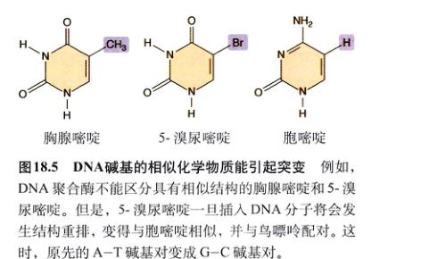图 18.5 DNA 碱基的相似化学物质能引起突变 例如，DNA 聚合酶不能区分具有相似结构的胸腺嘧啶和 5-溴尿嘧啶。但是，5-溴尿嘧啶一旦插入 DNA 分子将会发生结构重排，变得与胞嘧啶相似，并与鸟嘌呤配对。这时，原先的 A-T 碱基对变成 G-C 碱基对。
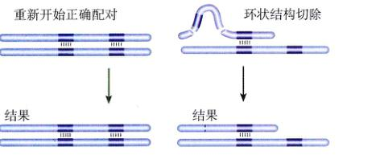图 18.6 滑脱错配 当同源染色体之含有某一序列的多个拷贝，并且另一条染色体与其配对时发生错位，就产生滑脱错配现象，就像衬衫系错了扣。产生的环状结构有时被细胞的修复酶切除，出现一小段缺失而改变阅读框。任何能够起到稳定环状结构作用的化学物质都能增加它被切除的几率。
基因在染色体上的位置是决定该基因是否被转录的重要因素。有些基因若紧挨着染色体上螺旋紧密的部分就不能被转录，即使这些基因处于染色体的其他位置时，可以被正常转录。很多基因的转录方式都是通过这种机制加以控制的，染色体某一部位的卷曲程度取决于该部分与特定蛋白质的结合程度，因为蛋白质结合得紧密与否决定了转录过程中 RNA 聚合酶接近该部分的难易程度。
染色体总体上经历几种不同的物理改变，会对分布其上的基因位置产生很大影响。两种最重要的物理变化是易位 (translocation) 和倒位 (inversion)。易位是指一条染色体上的一部分段移位到另一条染色体上去了；倒位是指染色体上一部分发生方向上的倒转。易位经常会对基因表达造成很大影响；倒位则不然，它不过会改变基因的表达方式，但这并不表示倒位没有意义。如果重组发生在倒位区段内，一条同源染色体的一段片段发生倒位，而另一条相应的部分没发生倒位（图 18.7），就会发生严重问题：所有含有染色单体的配子都不含有和母体相同的一套完整基因组。
其他的染色体变化改变了生物体所拥有的基因拷贝数目。缺失或者重复染色体上特定的基因或片段，丢失或者获得整条染色体（非整倍性, aneuploidy），整个染色体组数目的加倍（多倍性, polyploidy）。大多数缺失是有害的，因为它们使二倍体基因组的基因拷贝数减半，严重影响转录水平。同样，重复也将导致基因数目的失衡，对机体有严重危害。
很多 DNA 分子上的小片段通过酶的作用，能把自己先“切”下来，再“粘”到相邻位置上，而从基因组中的一个地方移动到另一个地方。这种可移动的 DNA 片段叫做转座子 (transposon)。转座子随机挑选要要去去的目的地，它们进入染色体不同部位的几率是相同的。如此一来，难免会有一些转座子恰好插入到某些基因内部，这种情况下大多数插入了转座子的基因会失活。该基因编码的蛋白质由于有这种毫无意义的大片段插入，其结构被破坏，这种现象称为插入失活 (insertional inactivation)，在自然界里普遍发生。事实上，插入失活可能是引发基因突变的最重要因素之一。摩尔根最初发现的白眼果蝇变株就是插入失活造成的——转座子插入的位置是编码一种色素合成酶的基因（见第13章）。
正如所料想的，许多人类遗传疾病都是由于转座造成的。例如，Alu 是人体内的一种转座子，它能插入凝血因子 IX 的编码基因，在那里提前添加一段终止密码子，引起 X 染色体连锁血友病 (X-linked hemophilia)。Alu 还能插入到编码低密度脂蛋白受体 (LDL receptor) 的基因中，引起遗传性高胆固醇，即高胆固醇血症 (hypercholesterolemia)。
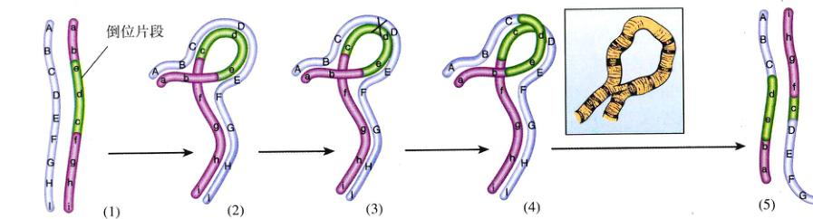图 18.7 倒位的后果 (1) 染色体的一个片段发生倒位；(2) 在减数分裂时只能通过形成内部环状结构进行配对；(3) 减数分裂时发生在倒位片段的任何交换都将产生不能存活的配子；每条染色体都丢失了一些基因，其他的被重复 ((4)和(5))。为了清楚起见，只画出两条链，尽管交叉发生在四分体阶段。倒位片段之间的配对有时在显微镜下呈现为环状结构。
有趣的是，一种果蝇体内的转座子 Mariner 居然能引起一种罕见的人类神经系统疾病——夏-马-特三氏病 (Charcot-Marie-Tooth disease)。这种病的症状是腿部和脚部的肌肉和神经逐渐萎缩。Mariner 转座子的插入位置是第 17 条染色体上的 CMT 基因，产生一个脆性位点，在此处容易引起染色体断裂。目前还不知道这种果蝇体内的转座子是如何进入人体基因组的。
癌症是细胞的生长失调。癌症刚发生时，正常的细胞开始以一种无法控制的侵害方式生长 (图 18.8)。结果出现一个细胞团，其体积不断扩大，即肿瘤 (tumor)。肿瘤细胞能广泛扩散到身体各个部位，在远处引起新的肿瘤形成 (图 18.9)，这叫做转移 (metastase)。癌症可能是对人类健康危害性最大的一种疾病。1999年出生的孩子将有三分之一在他们生命的某个阶段患癌症；四分之一的男孩和三分之一的女孩将有一天死于癌症。我们中大多数人曾有亲人和朋友患有癌症。2000 年一年之中有 552 200 位美国人死于癌症。
众所周知，研究人员为揭示癌症形成的原因付出了很大努力。过去的 20 年中，科学家利用分子生物学技术对癌症进行研究取得了很大进展，人们对癌症已经有了初步认识。目前已知，癌症是体细胞的基因紊乱，损坏的基因不能正确地控制细胞繁殖。细胞分裂周期受一组功能精细的蛋白质调控，在第11章已有描述。癌症就是由于编码这些蛋白质的基因发生突变而引起的。
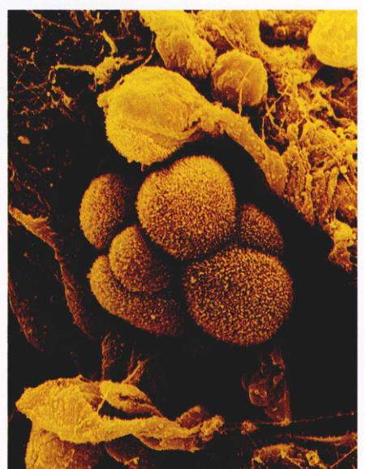图 18.8 肺癌细胞 (530X) 肺泡中的肿瘤细胞。
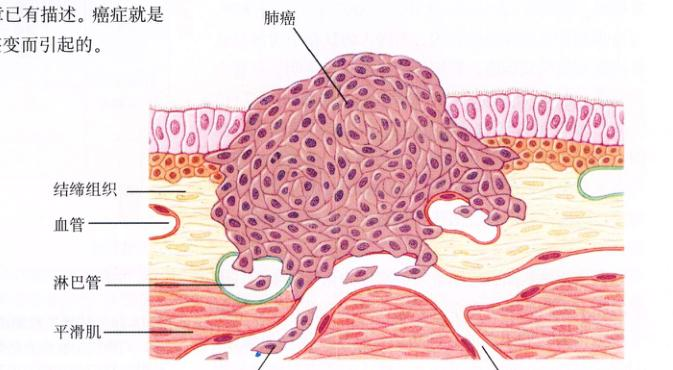图 18.9 癌症发生示意图 这一团细胞是人肺内表面上皮细胞癌。随着细胞不断生长，癌侵入到周边组织，最后蔓延到肺部丰富的淋巴管和血管中。这些管道将癌细胞扩散到全身，癌细胞到达一处地方就安家落户开始繁殖，形成新的癌组织。
使 DNA 发生突变的化学物质可能引起癌症；某些情况下病毒感染打乱了细胞正常增殖的步调，也能引发癌症。不论癌症的诱因是什么，所有癌症的特点都是细胞生长和繁殖失控，发生癌变的细胞不会停止分裂。癌细胞是货真价实的“不死之躯”，除非它们所生存的机体死亡。
| 癌症类型 | 新发病例 | 死亡数 | 死亡率 |
|---|---|---|---|
| 肺癌 | 164 100 | 156 900 | 28 |
| 结肠和直肠癌 | 130 200 | 56 300 | 10 |
| 白血病/淋巴瘤 | 93 100 | 49 200 | 9 |
| 乳腺癌 | 184 200 | 41 200 | 8 |
| 前列腺癌 | 180 400 | 31 900 | 7 |
| 胰腺癌 | 28 300 | 28 200 | 5 |
| 卵巢癌 | 23 100 | 14 000 | 3 |
| 胃癌 | 21 500 | 13 000 | 2 |
| 肝癌 | 15 300 | 13 800 | 2 |
| 神经系统/眼癌 | 18 700 | 13 200 | 2 |
| 胆囊癌 | 53 200 | 12 200 | 2 |
| 口腔癌 | 30 200 | 7 800 | 2 |
| 肾癌 | 31 200 | 11 900 | 2 |
| 子宫颈癌/尿道癌 | 48 900 | 11 100 | 2 |
| 恶性黑素瘤 | 47 700 | 7 700 | 1 |
| 肉瘤(结缔组织) | 10 600 | 6 000 | 1 |
| 其他癌症 | 139 400 | 77 800 | 14 |
几乎所有的组织都可能发生癌变，因此癌症的种类数不胜数。肉瘤 (sarcoma) 是结缔组织、骨或肌肉等部位的肿瘤。癌 (carcinoma) 是表皮组织（如皮肤等）部位的肿瘤。在美国，死亡率最高的 3 类癌症是肺癌、结肠和直肠癌、乳腺癌 (表 18.2)。大多数肺癌是可以避免的，因为吸烟是导致肺癌的元凶。美国人的饮食中肉制品含量过高可能引发肠癌。乳腺癌的成因至今不明，尽管在 1994 年和 1995 年，研究人员分离出 BRCA1 和 BRCA2 (位于人的第 17 条和第 13 条染色体上的 1 号和 2 号乳腺癌基因)，可能与患乳腺癌的遗传易感性有关。遗传性乳腺癌约占乳腺癌总数的三分之一，他们的发现给人们带来了希望：研究人员不久将揭开导致遗传性乳腺癌的基本机制。
某些化学物质，特别是那些高效的化学诱变剂与癌症的关系使研究人员很早就提出，癌症至少在部分情况下是由化学物质引起，即所谓“化学致癌作用理论” (chemical carcinogenesis theory)。被认为能引发癌症的物质称为致癌物 (carcinogen)。Bruce Ames 发明的埃姆斯检测法 (Ames test) 是检验某种化学物质是否能诱发突变的简便易行方法 (图 18.10)。该方法采用的材料是一株组氨酸合成基因被破坏的沙门菌 (Salmonella)。由于这种细菌自身不能合成组氨酸，因此不能在缺少组氨酸的培养基上生长，只有发生回复突变 (back-mutation)，恢复组氨酸合成能力的菌株才能在上述的培养基上生长。因此，统计不含组氨酸的培养基上出现的菌落数，可以知道回复突变发生的频率。大部分能引起回复突变的化学物质是致癌的；反之，大部分致癌物都能引起回复突变。为了提高检测的精确性，研究人员将菌株进行改造，使它们的 DNA 修复机制失效。化学致癌物和包括 X 射线等电离辐射在内的其他环境因素是人们探寻癌症成因的焦点 (图 18.11)。
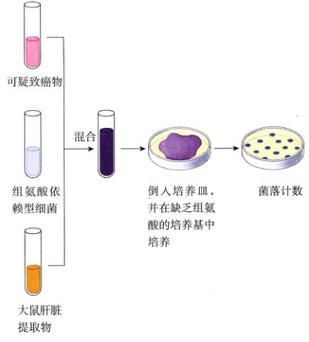图 18.10 埃姆斯检测法 该法选用沙门菌组氨酸缺陷型突变株。如果可疑致癌物是致癌的，它可以产生回复突变。加入的鼠肝提取物中含有将致癌物转化为诱变剂的酶。通过对缺乏组氨酸培养基上生长的菌落进行计数可以衡量致癌物的诱变能力。
图 18.11 潜在的致癌剂 (a) 全美每千人的癌症患者数不尽相同。在城市和密西西比三角洲的患病率较高，表明污染和杀虫剂的排放可能成为致癌因素。(b) 全美死亡率最高的癌症之一大肠癌在其他很多国家不常见。大肠癌的发生可能与肉食消耗量有关：高肉食含量的饮食减慢食物通过小肠的速度，延长了小肠壁暴露在消化废物环境中的时间。(c) 最危险的癌症是肺癌，引发肺癌的罪魁祸首是香烟烟雾。不同国家 35～44 年龄段男性的肺癌患者数与该国家 20 年前香烟消耗量直接相关。
化学致癌作用理论最早是由一位英国内科医生约翰·希尔 (John Hill) 在 1761 年提出的。他发现那些吸鼻烟上瘾的人会患一种罕见的鼻癌，由此推测烟草是引发癌症的因素。1775 年，伦敦的外科医生波希瓦耳·波特 (Percivall Pott) 也发现了类似状况：那些烟囱管道清洁工容易患睾丸癌，可能和烟灰、煤焦油有关。英国的管道清洁工不经常洗澡，身上总是沾满煤焦油，而美国大陆的管道清洁工每天都洗澡，因此很少患睾丸癌。这些连同其他观察到的现象使人们推测，癌症是由化学物质对人体及其作用引起的。
这一假说提出一个多世纪后才被直接验证。1915 年，日本医生 Katsusaburo Yamagiwa 在 3 个月内每隔两到三天就把煤焦油的提取物涂抹在 137 只用于实验的兔子身上，观察出现的现象。一年以后，有 7 只兔子身体上涂抹煤焦油的部位发生癌变。Yamagiwa 用煤焦油诱发了癌症，第一次直接证明了化学致癌作用。随后几十年，陆续证明了多种化学物质的致癌作用，而且其中大部分能诱发基因突变。
由于这些结果出自实验室，因此很多人不承认得出的结论同样适用于人类。煤焦油在人体也能引起癌症吗？1949 年，美国内科医生恩斯特·文德尔 (Ernst Winder) 和英国流行病学家理查德·道尔 (Richard Doll) 分别报道，肺癌与吸香烟有紧密关系。吸烟的同时，肺部也吸入了煤焦油。Winder 调查了 684 名肺癌患者和 600 名健康人，询问他们是否有吸烟史，结果发现吸烟成瘾的人肺癌发生率比不吸烟的人高 40 倍。Doll 的研究更有说服力：他采访了很多英国内科医生，将那些吸烟的人记录在案，然后观察他们的肺癌发生情况，结果患肺癌的人不少，而且绝大多数是那些吸烟的人。这些研究表明，50 年前香烟中的煤焦油和其他一些化学物质导致那些烟瘾很大的人染上肺癌。尽管烟草公司极力否认这一事实，但越来越多的证据表明，早期研究得出的结论是正确合理的。香烟中所含的化学物质能引发肺癌这一点是毋庸置疑的。
过去 50 年进行的研究发现，数以百计的人工合成化学物质在实验动物身上能引发癌症。其中包括三氯乙烯、石棉、苯、氯乙烯、砷、芳香基酰胺以及一大类化学结构类似六元环状的石油化工产物。工人们每天都要接触这些有害的物质 (表 18.3)。
除了鉴定出那些潜在的危险物质之外，有关致癌物的研究还能告诉我们关于癌症的什么特性呢？这些致癌物有什么共同的特征？它们都是诱变剂，都能诱发 DNA 发生变化。
不过，化学诱变剂不是惟一的致癌物，有些肿瘤几乎可以肯定是由病毒感染而引起的。从有些肿瘤组织里能提取出病毒，这些病毒可以感染其他生物个体使其也患上肿瘤。人类癌症中大约 15% 与病毒有关。
1911 年，美国的医学研究者 Peyton Rous 报道了一种与鸡肉瘤有关的病毒，进而被命名为劳斯肉瘤病毒 (Rous avian sarcoma virus, RSV)。他发现 RSV 病毒能侵染鸡结缔组织中的成纤维细胞 (fibroblast)，从那些被感染的组织中能分离出更多的 RSV 病毒。为此，Rous 获得了 1966 年诺贝尔生理学及医学奖。后来，RSV 被证明是一种 RNA 病毒，叫做反转录病毒 (retrovirus)。这种病毒入侵细胞后，根据自身的 RNA 基因组合成一份 DNA 拷贝，再把这份 DNA 拷贝插入到宿主的 DNA 中去。
RSV 病毒是怎么引发癌症的？把 RSV 和另外一种不能导致鸡肉瘤病的 RAV-O 病毒比较：两种病毒几乎完全相同，仅仅有一个基因的区别。这个基因被命名为 src，是 sarcoma (肉瘤) 的缩写，存在于 RSV 而不存在于 RAV-O。
病毒的基因如何引发癌症？1970 年分离出的温度敏感型 RSV 突变株为研究工作提供了重要线索。这些菌株在 35°C 可将正常组织培养细胞转化为癌细胞，但在 41°C 不能，这种温度敏感的特性一般都与蛋白质有关。因此，src 基因有可能在宿主体内被转录，而不是作为某些调控蛋白的识别位点。这一结论令人振奋，说明该癌基因 (oncogene) 编码的蛋白质可以被分离提纯，人们可以进而研究它的性质。
1977 年，Michael Bishop 和 Harold Varmus 第一次分离出 src 基因编码的蛋白质，并因此获得当年的诺贝尔奖。该蛋白质是一种中等大小的磷酸化酶，可将蛋白质肽链中的酪氨酸磷酸化。这种酪氨酸激酶 (tyrosine kinases) 广泛存在于动物细胞中，例如，表皮生长因子 (epidermal growth factor, EGF) 是一种细胞分裂起始的信号蛋白，它的细胞膜受体就是酪氨酸激酶。这一发现使人们有理由相信，RSV 是通过把细胞中某种促生长酶激活而发生致癌作用的，而正常细胞中这种促生长酶处于失活状态。以后的实验证实，这一设想是正确的。
src 基因是不是连同 RSV 病毒基因组的其他部分一起被整合到宿主染色体中呢？要回答这个问题，可以准备放射性核素标记的基因探针，它能与鸡染色体的互补序列结合，然后检测鸡染色体中呈现放射性的部分。实验结果表明，src DNA 确实与 RSV 病毒基因组在鸡染色体上的插入点结合，不过它也结合另一位点，该位点并没有 RSV 基因组的插入！
关于第 2 结合位点的解释是，src 基因并不是一个纯粹的病毒基因，而是正常情况下鸡体内的一个促生长基因。这个正常的基因就是 src 与鸡 DNA 结合的第 2 个位点。RSV 的祖先在某次感染过程中带走了鸡正常基因的拷贝，现在这个拷贝在病毒体内受病毒启动子而不是鸡的基因组调节系统的控制 (图 18.12)。
| 化学物 | 癌 症 | 处于暴露危险中的工人 |
|---|---|---|
| 普通暴露 | ||
| 苯 | 骨髓性白血病 | 画工、染料使用者、家具加工者 |
| 汽车尾气 | 肺 | 铁路及巴士工人、卡车司机、矿工 |
| 矿物油 | 皮肤 | 冶金工人 |
| 杀虫剂 | 肺 | 喷药剂者 |
| 香烟煤焦油 | 肺 | 吸烟者 |
| 稀少暴露 | ||
| 石棉 | 间皮组织，肺 | 石棉工人 |
| 合成矿物纤维 | 肺 | 水管工、墙壁绝缘工人 |
| 染发剂 | 胆囊 | 理发师 |
| 油漆 | 肺 | 油漆工 |
| 聚氯丙烯 | 肝、皮肤 | 润滑剂、墨水、黏合剂、杀虫剂等的使用者 |
| 煤烟 | 皮肤 | 烟囱清洁工、消防员 |
| 罕见暴露 | ||
| 砷 | 肺、皮肤 | 药剂喷洒者、鞣革者 |
| 甲醛 | 鼻子 | 木材加工者、纺织品加工者 |
图 18.12 鸡的基因如何进入 RSV 基因组 RSV 只有几个基因：编码蛋白质外壳和包膜蛋白的 gag 和 env 基因，编码反转录酶的 pol 基因，还有引起肉瘤的 src 基因。而 RAV-O 缺乏这种基因，体内有正常的 src 基因拷贝，受调节基因调控，RSV 最初就是从鸡体内得到这个基因的。
转染 (transfection) 是研究肿瘤的一项重要技术。首先将肿瘤细胞的 DNA 分离出来，随机切成一个个的片段，然后将每个片段植入细胞，检测它们各自的活性。 研究人员使用转染技术后发现，人类大多数肿瘤起源于调控细胞周期的基因发生突变。有时，仅仅一个基因的突变就足以使正常分裂的细胞转变成癌细胞 (表 18.4)。
编码细胞周期调节蛋白的正常基因与癌变基因的不同之处可能就在一个点突变。例如，与 ras 基因有关的膀胱癌是由于一个鸟嘌呤碱基突变为胸腺嘧啶碱基，结果把正常 ras 编码的蛋白质中的一个甘氨酸变成了缬氨酸而引起的。其他几种 ras 相关的人类癌症都与单个核苷酸的替换有关。
端粒 (telomere) 位于染色体末端，由一小段核苷酸序列经过上千次重复构成。因为 DNA 聚合酶不能从头到尾完整地复制一条染色体（因为无法合成最后一段冈崎片段所需的引物），因此端粒在每次细胞分裂时会丢失一部分。 在健康的细胞中，存在一种“肿瘤抑制” (tumor suppressor) 酶——端粒酶 (telomerase)，因为端粒酶可以把丢失的端粒重新加载到染色体末端。如果没有端粒酶存在，细胞每经历一次复制，染色体就丢失掉一部分端粒，随着细胞分裂次数的增加，丢失的遗传物质也越来越多，经过大约 30 次复制后，残余的染色体已经不足以满足下一次复制的需要了。成年人的组织细胞一般分裂 25 次左右，仅通过最后 5 次分裂癌细胞还无法大规模增殖，因此如果没有端粒酶存在，即使细胞发生癌变，经过不了几次细胞分裂就会停止。 因此，细胞体内的端粒酶抑制机制是一道有效阻止细胞扩散的天然屏障，任何破坏这种抑制机制的突变都能使癌症趁虚而入。研究人员根据这一线索在人的卵巢肿瘤细胞中找到了端粒酶，这些细胞发生了突变，结果使阻止端粒酶基因转录的机制失去作用，产生的端粒酶使癌细胞长生不死，能无限制地分裂下去。
大多数癌症直接由生长调控基因的突变引起。可以把诱发癌症的突变分为两大类：原癌基因的突变和抑癌基因的突变。
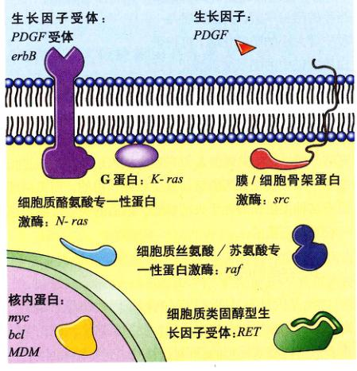图 18.13 癌基因的主要类型 在癌基因突变可能引起癌症以前被称为原癌基因（即可以变成致癌基因）。这里列举了几类主要的原癌基因及其典型代表。
| 基 因 | 产 物 | 癌 症 |
|---|---|---|
| 癌基因 | ||
| 编码生长因子及其受体的基因 | ||
| erb-B | 上皮生长因子受体 | 脑癌、胸腺癌 |
| erb-B2 | 生长因子受体 (又称为 neu 基因) | 乳腺癌、卵巢癌、唾液腺癌 |
| PDGF | 生成血小板的生长因子 | 脑癌 |
| RET | 生长因子受体 | 甲状腺癌 |
| 编码胞内信号传导通路的基因 | ||
| K-ras | 蛋白激酶 | 肺癌、结肠癌、卵巢癌、胰腺癌 |
| N-ras | 蛋白激酶 | 白血病 |
| 编码激活生长促进基因转录的转录因子基因 | ||
| c-myc | 转录因子 | 肺癌、乳腺癌、胃癌、白血病 |
| L-myc | 转录因子 | 肺癌 |
| N-myc | 转录因子 | 神经细胞瘤 |
| 编码其他类型蛋白质的基因 | ||
| bcl-2 | 细胞凋亡抑制蛋白 | B 淋巴细胞囊状瘤 |
| bcl-1 | 细胞周期蛋白 D1 | 乳腺癌、头颈癌 |
| MDM2 | p53 抑制蛋白 | 各种结缔组织瘤 |
| 肿瘤抑制基因 | ||
| 编码胞质蛋白质的基因 | ||
| APC | 信号通路 | 结肠癌、胃癌 |
| DPC4 | 抑制细胞分裂的信号通路中的替补者 | 胰腺癌 |
| NF-1 | ras 蛋白抑制剂，能刺激细胞分裂 | 神经纤维瘤、白血病 |
| NF-2 | ras 蛋白抑制剂 | 脑癌、施旺细胞瘤 |
| 编码核内蛋白质的基因 | ||
| MTS1 | p16 蛋白 | 各种癌症 |
| p53 | p53 蛋白 | 各种癌症 |
| Rb | Rb 蛋白 | 乳腺癌、骨癌、胆囊癌、成视网膜细胞瘤 |
| 编码胞内位置未知的蛋白质的基因 | ||
| BRCA1 | ? | 乳腺癌、卵巢癌 |
| BRCA2 | ? | 乳腺癌 |
| VHL | ? | 肾细胞癌 |
原癌基因 (proto-oncogene) 编码的蛋白质促进细胞分裂，这些促进分裂蛋白质的突变使它们所在细胞肆意繁殖，突变的原癌基因变成了癌基因 (oncogene) (图 18.13)。细胞内有一些和质膜表面受体相联系的信号分子，癌症的发生常常涉及这些信号分子活性的改变。在正常细胞内，被受体激活的信号通路能触发细胞分裂通过 G₁ 期检验点 (G₁ checkpoint) (见图 11.17)。
这些突变原癌基因的等位基因都是显性的，其中研究得最多的有 myc 和 ras。myc 基因的表达产物促进细胞周期蛋白 (cyclin) 和细胞周期蛋白依赖性激酶 (Cdks) 的合成，而上述两种物质是调控细胞分裂检验点的关键物质。 ras 基因的表达产物与细胞对一系列生长因子作出反应有关 (如表皮生长因子 EGF，一种启动细胞有丝分裂的胞间信号分子)。当 EGF 与上皮细胞质膜上特定的受体蛋白结合时，突向胞浆的受体部分催化 ras 蛋白与 GTP 结合。GTP/Ras 蛋白复合物则募集 Raf 蛋白至细胞膜的内表面处并将其激活，后者再激活胞浆内的激酶，由它产生细胞内部的信号传导系统 (见第7章)。这一过程的最后一步是转录因子的激活，最终引发细胞分裂。
图 18.14 抑癌基因 Rb 和 p16 相互作用阻碍细胞分裂 成视网膜细胞瘤蛋白 (Rb) 与转录因子 E2F 结合，使后者不能启动有丝分裂。当 Cdk 与细胞周期蛋白作用并使 Rb 磷酸化后，细胞通过 G₁ 期检验点并释放 E2F。肿瘤拟制子 p16 蛋白与 Cdk 结合，使它不能磷酸化 Rb，从而加强 Rb 的抑制作用。
图 18.15 抑癌基因 p53 调控细胞周期 p53 蛋白在 G₁ 期检验点检查 DNA 损坏情况。如果 DNA 损坏，p53 激活修复系统将细胞周期停滞在 G₁ 期检验点。这为修复提供了时间。p53 通过诱导 p21 的转录而暂停细胞周期，p21 蛋白通过与细胞周期蛋白结合，使它们不能与 Cdk 形成复合物。
裂。诱发癌症的 ras 基因突变，使发动细胞分裂所必需的 EGF 量大幅度减少。
如果把上述第一类诱发癌症的突变比喻为“踩在细胞分裂的油门上”，那么下面要讲的第二类突变就是“使细胞分裂的刹车失灵”。正常细胞有一些专门的蛋白，可以阻止细胞周期蛋白与周期蛋白依赖性激酶相结合，编码这些蛋白质的基因叫做抑癌基因 (tumor-suppressor gene)，发生突变的等位基因是隐性的。 研究最多的抑癌基因包括 Rb、p16、p21、p53。Rb 基因的非磷酸化产物与转录因子 E2F 结合，而 E2F 调控转录的几种基因能通过 G1 期检验点进入细胞周期的 S 期 (DNA 合成期) 所必需的 (图 18.14)。p16 和 p21 编码的蛋白加强了 Rb 蛋白的肿瘤抑制作用，通过与适宜的 Cdk/cyclin 复合体结合并抑制其激酶活性，从而抑制 Rb 蛋白的磷酸化。p53 蛋白监测 DNA 的完整程度，当 DNA 损坏时被激活 (图 18.15)。p53 蛋白可能通过 p21 基因的转录而发挥作用，而 p21 蛋白可以与细胞周期蛋白以及 Cdk 结合，阻碍它们发生相互作用。吸烟成瘾导致肺癌的一个原因是吸烟导致 p53 基因突变。实际上，几乎有一半癌症与 p53 基因的突变有关。
细胞通过几个检验点来控制自身的繁殖，这些检验点控制的失活将导致癌症发生。因此，大多数癌症的诱发都牵扯到多个基因，其中最常见的有 4 个 (图 18.16)。在很多用于癌症研究的组织细胞中，大多数检验点已经失活，因而只要一个或者几个基因发生突变就能使癌细胞生长。几个调控基因必须发生失活才可能引发癌症的事实解释了为什么大多数癌症都发生在 40 岁以上的人身上 (图 18.17)。致癌的大部分单个细胞有更充裕的时间积累各种突变，现已证实，突变——包括发生在那些蛋白的磷酸化。
图 18.16 引发直肠癌的突变进程 致命的癌细胞转移是直肠上皮细胞发生 6 个系列变化的最终结果。其中一个变化是由原癌基因的突变引起，另外三个变化与抑癌基因的失活突变有关。
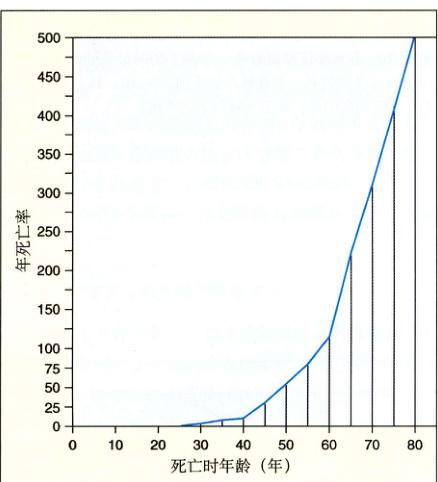图 18.17 癌症的年死亡率随年龄增长而攀升 40 岁后癌症死亡率陡升，60 岁后上升更快。表明若干独立的突变必须积累起来才能致癌。
些潜在致癌基因上的突变——确实是随着时间的推移而积累。1994 年，研究人员利用聚合酶链式反应 (PCR) 技术在 63 名健康人的血细胞中寻找某一特定癌症相关基因的突变。他们发现，这种突变在 60 岁以上人中出现的次数是在 20 岁以下人中出现次数的 13 倍！
我们如何预防癌症？最显而易见的办法就是把突变降到最低限度。任何能够减少与诱变剂接触物质都可以降低癌症发生机会，因为接触诱变剂可能使一个正常的基因突变为癌基因。因此，检验某物质的致癌能力可以通过测量该物质的诱变能力而实现。
在美国，与吸烟有直接关系的癌症占癌症总数的三分之一。吸烟与癌症的关系最明显体现在肺癌上，令人触目惊心 (图 18.18)。对男性吸烟者的调查表明，肺癌发生率与每天所吸的香烟数量成正相关 (图 18.19)。对于每天吸两包或更多香烟的人来说，患肺癌的危险性比不吸烟的人至少高出 40 倍，而后几乎不患肺癌。显然，戒烟是预防肺癌的有效手段。另外的研究表明，在吸烟与预期寿命下降之间存在着明显的联系 (图 18.20)。人寿保险公司经过计算得出结论：每吸一支烟，人的寿命就将减少 10.7 min (这比吸一支烟所用的时间还长)！每包 20 支装规格的香烟上都暗含着这样一条告诫：“吸完这包香烟的代价是你生命的三半小时。”
2000 年，美国有超过 50 万人死于癌症，其中大约 28% 死于肺癌。20 世纪 80 年代，每年约有 14 万人被诊断出患有肺癌；其中 90% 左右的患者在 3 年之内死亡，其中 96% 的人是吸烟者。 吸烟是深受欢迎的消磨时间的好方法。24% 的美国人吸烟，在 1999 年消耗了超过 4500 亿支香烟。这些香烟散发出来的烟雾含有大约 3000 种化学物质，包括氯乙烯、苯并芘 (benzo[a]pyrenes)、亚硝基去甲基烟碱 (nitroso-nor-nicotine) 等诱变剂，而吸烟使这些物质与肺组织直接接触。
图 18.18 癌变的人肺照片 肺的下半部正常，上半部完全被癌细胞占据。癌细胞最终会侵入血管和淋巴系统，扩散到全身。
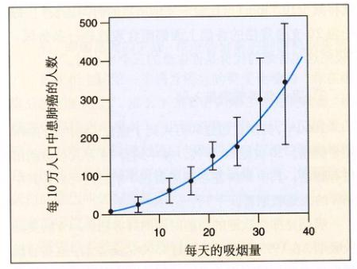图 18.19 吸烟致癌 每年每 10 万人中患肺癌的人数随着每天吸烟量的增长而增长。
图 18.20 吸烟降低预期寿命 世界上历时最长的吸烟调查于 1951 年在英国展开。调查显示截止到 1994 年，35 岁~69 岁的男性中吸烟者的死亡率为不吸烟者的 3 倍。
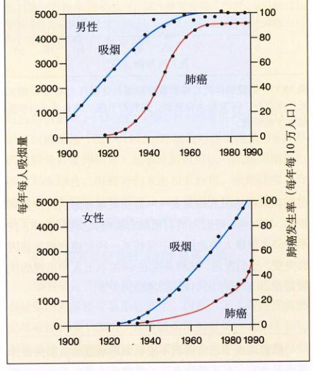图 18.21 男女肺癌的发病率 这两张图说明了吸烟与肺癌之间的相关性。
肺泡上皮细胞构成肺脏的基本结构，并且直接接触吸入肺内的化学物质。因此，吸入的诱变剂能对上皮细胞的基因造成严重损害。这些基因中也包括调控细胞增殖的基因，一旦损坏，肺癌就可能发生。 苯并芘的作用清楚地证实了这一过程。苯并芘是一种强诱变剂，存在于烟草的煤焦油里面，点燃香烟时被释放到烟雾里。肺泡上皮细胞吸收苯并芘后把它转化为衍生物 BPDE (benzo[a]pyrene-diolepoxide)，直接与抑癌基因 p53 结合并使其失活。p53 编码的蛋白质监控细胞周期的 G1 期检验点 (见第11章)，是阻止细胞无限分裂的关键机制。超过 70% 的肺癌患者体内 p53 基因突变为失活形式。经检查，癌细胞内的 p53 突变几乎全部发生在具基序列 3 个热点之一；而 BPDE 引发的 p53 基因突变同样发生在这 3 个热点！这是吸烟与肺癌相关联的关键证据。
香烟生产商声称，吸烟导致肺癌只是偶然情况，吸烟与肺癌之间的必然联系还未被证明。仔细观察图 18.21 中的数据，看看是否同意。图 18.21 表示了 1900 到 1990 年美国男人的吸烟状况和肺癌发生的状态。请注意，直到 1920 年肺癌还是一种罕见的疾病，之后吸烟的人越来越多，逐渐成为普遍的嗜好。20 年后，肺癌也变得越来越普遍。 图 18.21 显示了美国妇女的吸烟和肺癌发生状况。受社会风俗影响，大多数女性不吸烟，直到第二次世界大战以后，传统观念发生了变化，女性吸烟的人数逐渐增多。到 1963 年，男性肺癌发生率已经接近现在的水平，而在女性中还很少见。同年，美国只有 6588 名女性死于肺癌。但是女性吸烟的人数越来越多，患肺癌的人也越来越多，同样经过了 20 年的缓慢增长，现在美国女性吸烟人数跟男性不相上下，她们患肺癌的死亡率也直追男性。1990 年，美国超过 49 000 名女性患者死于肺癌。目前，每年每 10 万名吸烟者中就有 180 人死于肺癌，换句话说，年死亡率大约为千分之二。
很多治疗癌症的方法目前正在研究开发中 (图 18.22)。一些疗法主要阻止细胞内癌变的发生，另一些疗法则作用于癌细胞外，防止肿瘤的生长和扩散。
很多前景看好的癌症疗法作用于潜在的癌细胞内，集中作用于细胞分裂决定期的不同阶段。
(1) 接受分裂的信号：决定过程的第一步是“分裂”信号的接受，它常常是邻近细胞释放的一种被称为生长因子的蛋白质。这种生长因子能与细胞表面的受体结合。因此，如果细胞表面受体编码的突变相当于放大了分裂信号，结果导致癌症的发生。超过 20% 的乳腺癌被证实过度表达了一种与表皮生长因子受体结合的称为 HER2 的蛋白。 以决定过程为靶阶段的疗法利用人体免疫系统来攻击癌细胞。基因工程生产的一种特殊蛋白质——“单克隆抗体 (monoclonal antibody)”就是治疗的药物。人工设计出的单克隆抗体可以自动识别 HER2 并与之结合。就像挥动红旗发出警报那样，单克隆抗体发动免疫系统对 HER2 细胞进行攻击。因为乳腺癌细胞含有过量的 HER2，因此被优先攻击。Genetech 公司最近批准的单克隆抗体
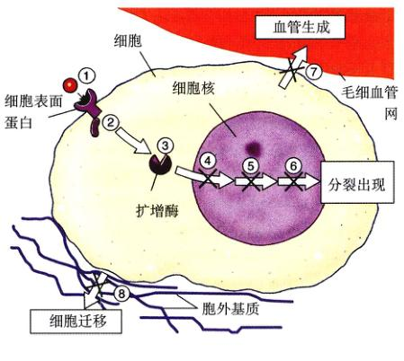图 18.22 新的治疗癌症的分子疗法瞄准癌症发展的 8 个阶段 ①在细胞表面，生长因子发出细胞分裂的信号；②细胞内的蛋白质中继站传递信号；③胞质中的酶放大信号；④阻碍细胞复制的“刹车”被释放；⑤蛋白质检查确保 DNA 完好无损；⑥其他蛋白重建染色体端部使 DNA 可以进行复制；⑦新生的肿瘤促进血管生成，生成促生长的血管；⑧一些癌细胞脱离胞外基质侵入身体的其他部分。
“Herceptin”在临床试验中取得了可喜的成效。此外，抗上皮生长因子受体的单克隆抗体 C225 已有成功治愈晚期大肠癌的实例，目前对 C225 的临床试验已经开始。
(2) 延迟开关：决定过程的第二步是信号分子进入细胞内部，即细胞质。在正常细胞中，这一步是由 Ras 蛋白控制，Ras 的作用就像一个延迟开关。当类似 EGF 的生长因子与受体结合时，相邻的 Ras 蛋白就扭曲成一种新的形状，这种新形状具有化学活性，能发动一系列化学反应，将细胞分裂的信号向内一直传递到细胞核。突变的 Ras 蛋白就像一个按到“开”位置的延迟开关，无论细胞表面受体是否结合，都引导细胞不停地分裂下去，30% 的癌症中都有突变的 Ras 蛋白。 正常的 Ras 蛋白合成出来是没有生物学活性的。以这一阶段为靶阶段的疗法恰恰利用了这一点。只有被特定的酶——法尼基转移酶 (farnesyl transferase) 修饰过的 Ras 蛋白才能起到延迟开关的作用。动物实验表明，法尼基转移酶阻断剂可使肿瘤退化，并能防止形成新的癌细胞。
(3) 信号放大：决定过程的第三步是在细胞质中放大信号。正如经过长途传输的电视信号必须被放大后才能接收一样，分裂信号传送到细胞内部的细胞核时也必须经过放大处理。在分子水平上，传递到细胞核已经很远的距离了。细胞放大信号的方法很巧妙：当 Ras 蛋白处于“开”的状态时，激活一种蛋白激酶，这一激酶继续激活其他的蛋白激酶，然后连锁反应下去。这就好像变魔术一样，一个蛋白激酶被激活，瞬间就能激活成百上千的蛋白激酶，所有这些酶起相同的作用，这样信号就被这种酶的级联反应放大数千倍。每发生一次激活，信号就被放大数千倍。若突变刺激了任何一种蛋白激酶，可能使本来已经放大了的信号进一步放大，则导致癌症的发生。蛋白激酶 Src 的过度活跃是癌症的一种诱因，这种情况占癌症总数的 5%。 针对这一阶段的疗法采用一种“反义 RNA (antisense RNA)”方法，特异性进攻 Src 或者其他诱发癌症的激酶突变。原理是：src 基因用自己的互补拷贝合成 Src 蛋白 (正义 RNA (sense RNA) 或信使 RNA)，利用正义 RNA 的镜像互补拷贝 (反义 RNA) 与它结合，则正义 RNA 就不能被用来合成 Src 蛋白。这一疗法的前景光明。在组织培养中，反义 RNA 可以抑制肿瘤细胞的生长，有些甚至能阻断移植到实验动物体内的人体肿瘤的生长。目前这种技术正准备用于临床试验。
(4) 解除刹车制动：决定过程的第四步是放松细胞用来制约分裂的“刹车”系统。这种“刹车”装置是一种叫做 Rb 的肿瘤抑制蛋白。在健康细胞中，该蛋白阻碍一种叫作 E2F 的转录因子发生作用。自由态的 E2F 使细胞能够复制 DNA。在正常情况下，当 Rb 被抑制时释放 E2F，细胞分裂开始。当 Rb 蛋白的突变使 E2F 的机制完全消失，导致细胞无限制地分裂下去，40% 的癌症都有 Rb 的异常形式存在。 针对细胞分裂这一阶段的疗法目前还处于尝试阶段。焦点集中在 E2F 的阻断药物上，这样就可以阻止由于 Rb 失活引起的肿瘤生长。E2F 基因被破坏的鼠是研制药物的有效模型，这种药物也是目前研究的热点。
(5) 确保一切准备就绪：决定过程的第五步是细胞采用某些机制检测 DNA 是否完好无损，然后准备进行分裂。在健康细胞中，这一任务由肿瘤抑制蛋白 p53 执行，p53 监控 DNA 的完整性。若发现 DNA 损伤或者有外来 DNA 存在，p53 就停止细胞分裂并激活修复系统。若损伤没得到及时修复，p53 则杀死细胞。这样，那些诱发癌症的突变要么被修复，要么随着细胞本身一起灭亡。若突变使 p53 自身受损，更多损伤将得不到修复而越积越多，当然在这些损伤中包含那些可以致癌的突变。50% 的癌症中都有缺陷的 p53。70%~80% 的肺癌中都有由于突变引起失活的 p53，香烟烟雾中的苯并芘就是 p53 潜在的诱变剂。 一种使用腺病毒 (adenovirus) 的有前景的新型疗法可以针对那 p53 突变引起的癌症。腺病毒为了在宿主细胞内生长，必须用自身 E1B 基因的表达产物阻断宿主细胞的 p53，这样腺病毒 DNA 才能复制。这意味着 E1B 缺失的腺病毒突变株不能在健康的宿主细胞内繁殖，但是在由于癌细胞中的 p53 已经损坏，所以突变株可以在癌细胞内繁殖，最后杀死癌细胞。把人的大肠癌和肺癌细胞植入免疫缺陷的小鼠体内，让其大量繁殖，然后用 E1B 缺失的腺病毒突变株感染这些老鼠，结果 60% 的肿瘤消失并且不再出现。不过最初的临床试验不容乐观，因为很多人体内存在腺病毒抗体。
(6) 踩下油门：细胞分裂从第六步的复制开始。在健康细胞中，一种肿瘤抑制蛋白能够阻止端粒酶的合成，这就好比汽车的油箱放空一样。没有端粒酶，细胞染色体就会丢失末端的端粒部分。染色体每复制一次，就丢掉更多的遗传物质。经过大约 30 次复制以后，丢掉的信息太多了，新的部分已经不足以再完成一次复制。一般情况下，成年人的组织细胞可以分裂 25 次左右。癌细胞经过剩下的 5 次分裂也不能成什么气候。因此，阻断端粒酶的合成是癌症形成过程中一种非常有效的自然制约机制。目前认为几乎所有的癌症都有这种抑制机制的突变有关，端粒酶的存在为肿瘤生长开足了条件。恢复端粒酶抑制机制应该可以达到抑制癌症的目的，这一
疗法目前刚刚开始临床试验。
(7) 肿瘤生长：某个细胞一旦开始以癌的形式生长，就形成了不断扩大的肿瘤。随着肿瘤越长越大，它需要的养分也越来越多，这些养分来源于机体的血液供应。为了更方便获得养分，肿瘤组织渗透漏出一些物质，促使周边组织形成小的血管，这就是“血管生成” (angiogenesis)。能阻碍血管生成的化学物质叫做“血管生成阻断剂”。两种血管生成阻断剂——血管生成抑制素 (angiostatin) 和内抑制素 (endostatin) 可使老鼠体内的肿瘤退化。尽管这一令人振奋的消息颇有争议，针对人进行的临床试验表明该疗法前景光明。
(8) 转移：如果肿瘤只是在它形成的部位继续生长下去，那么多数都可以通过手术切除，极少会有致命的危险。然而不幸的是，很多恶性肿瘤最终都要转移，单个癌细胞打破束缚进入细胞间的基质并扩散到身体的其他位置，在那里启动次级肿瘤的形成。这一过程需要降解细胞基质连接的金属蛋白酶、胞外基质成分 (如纤连蛋白)，它也可以促进进入淋巴的迁移和 RhoC，一种 GTP 水解酶，它通过提供所需的 GTP 而促进细胞迁移。今后的癌症治疗可以将这些物质列为目标。
这里所讲的一些癌症疗法只不过是沧海一粟，还有很多正处于临床试验之中，这些临床试验还要经过漫长的时间才能完成。不过我们可以预料，未来的 10 年，癌症将可以治愈。
突变是物种遗传信息内容的改变，但突变不是遗传多样性的惟一来源，现有遗传物质在基因组内的运动也能产生基因型多样性。作为类比，你可以设想一下这本书的书页：突变变就好比是书页中的一个或者几个字母的改变，例如这句话——A point mutation would correspond to a change in one or more of the letters on the pages. 下面这句话就是前面那句经经过“突变”带来的：“...in one or more of the letters of the pages”，前句中的“n”变成了后句中的“t”。然而，我们改变一下字母的顺序，句子结构也会发生不小的变化：“...in one or more of the pages of the letters”。“letters”和“pages”的交换改变了（或者说破坏了）句子本来的意思。这第二种变化代表了在基因组里，某个基因的位置发生了改变，这就是基因重组 (genetic recombination)。
从广义来讲，基因重组可以通过两种机制来完成 (表 18.5)。第一种机制被称为基因转移 (gene transfer)，是指一条染色体或基因组将自身的一部分遗传物质提供给另一条染色体或基因组。基因从 HIV 病毒传递到人染色体就是基因转移的例子。由于基因转移在原核生物和真核生物都发生，因此被认为是两种机制中比较原始的一种。
在两条染色体互相交换自身的片段时，就会发生相
| 类 型 | 发生情况 |
|---|---|
| 基因转移 | |
| 接合 | 大部分发生于细菌，定位于基因组的特异位点 |
| 转座 | 细菌和真核生物都发生；基因随机移动到染色体的其他位置 |
| 相互重组 | |
| 交换 | 要求同源染色体配对，可以发生在任何位置 |
| 不等交换 | 发生在错配片段的交换产生基因重复和删除 |
| 基因转换 | 配对的同源染色体之一被“修复”成与另一条相似 |
| 独立分配 | 减数分裂产生的单倍体细胞只有一条随机分配的同源染色体 |
互重组 (reciprocal recombination)。一个明显的例子就是减数分裂时同源染色体的交换。在减数分裂中发生的独立分配是另一种形式的相互重组，这解释了为什么双因子杂交子代分配的表现型具有 9:3:3:1 的比例，并且这种现象只发生在真核生物中。这些已在第12章和第13章讨论过。
基因在染色体上或者细菌的环状 DNA 分子上不是固定不动的，它们能够移动。有些基因之所以是因为它们是质粒 (plasmid) 的一部分。质粒是存在于染色体外的小环状 DNA，其进出染色体的位置是那些核苷酸顺序与质粒相匹配的地方。质粒常现于细菌，在细菌中染色体 DNA 与其他 DNA 片段容易发生相互作用。细菌体内大约 5% 的 DNA 以质粒形式存在，质粒有大有小，小的只有一个或几个基因，大的含有上百甚至具有结构复杂的基因。此外，还有些基因跟着转座子一起运动。细菌和真核生物体内都有转座子 (transposon)，它们能随机地从基因组的一个地方跳到另一个地方。
1947 年，Joshua Lederberg 和 Edward Tatum 发现了基因通过质粒的运动发生转移的现象。3 年后，Barbara McClintock 发现了转座子，她认为基因在基因组中位置并非固定不变的，而在在这以前，人们一直认为基因就像绳上的一串珠子一样在基因组中处于固定位置，因此，转座子的概念没有很快被接受。1958 年，Lederberg 和 Tatum 获得了诺贝尔奖；而直到 1983 年 McClintock 才获得诺贝尔奖 (图 18.23)。
图 18.23 1983 年，Barbara McClintock 因发现基因转座子而被授予诺贝尔奖。
为了理解质粒是如何产生的，让我们假想一条细菌 DNA 分子含有相同核苷酸序列的两个拷贝，这两个拷贝链有可能通过彼此碱基配对产生一个暂时的环状结构或二倍双螺旋结构。所有细菌都有重组酶，能使这样的双螺旋结构发生相互交换 (reciprocal exchange)，也就是两条链交换，交换的结果是环状结构从 DNA 分子上脱出，变成一个质粒 (图 18.24，第 1~3 步)，在重复序列之间的任何基因 (如图 18.24 中的基因 A) 都转移进质粒。 相互交换一旦生成了质粒，此时如果质粒上有复制
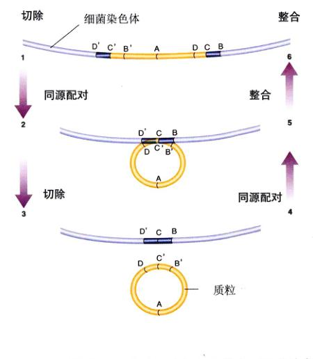图 18.24 质粒的插入和切除 因为细菌基因组末端的两个序列相同 (D'、C'、B' 和 D、C、B)，它们可以配对。1~3 步说明交换发生在配对时的顺序。结果切下环和游离质粒。4~6 步说明质粒插入基因组的步骤。
起点 (replication origin)，DNA 聚合酶就开始复制质粒，而且不会像基因组那样，受到一次细胞分裂只复制一次的限制。结果有的质粒在一个细胞里就有很多拷贝，而有的只有几个拷贝。
经过重组产生的质粒可以以它离开时的方式再次进入基因组。质粒 DNA 上最开始发生交换的地方叫做识别位点 (recognition site)。有时识别位点会与基因组上匹配的序列排在一起。如果重组发生在任何与识别位点匹配的地方，那么质粒就会整合到基因组里 (图 18.24，第 4~6 步)。整合可发生在任何序列列与基因组相匹配的地方，因此质粒整合进入基因组的地方可能不是它离开基因组的地方。若质粒整合到一个新的位置，那么它就把自身携带的基因传递到了这个位置。
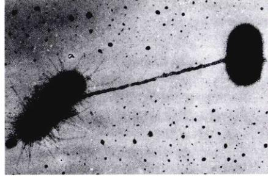图 18.25 通过菌毛接触 F⁺ 细胞的菌毛连接 F⁻ 细胞并拉近彼此之间的距离，使 DNA 传递能够发生。
质粒能从一个细菌转移到另一个细菌是 Lederberg 和 Tatum 的惊人发现之一。他们研究的质粒是大肠杆菌基因组的一部分，该质粒被命名为 F，为致育因子 (fertility factor) 的缩写，即只有 DNA 中含有整合 F 质粒的细菌才能扮演贡献遗传供体的角色，这些细胞被成为 Hfr (high-frequency recombination) 细胞。F 质粒含有一个 DNA 复制起点以及几个能促使它向其他细菌转移的基因，这些基因编码的蛋白质在细胞表面组装成一条中空的管，叫作菌毛 (pilus)。 当一个细胞 (F⁺) 的菌毛接触到另一个没有菌毛的细胞 (即不含 F 质粒) (F⁻) 表面时，菌毛将两个细胞拉近，使 DNA 交换成为可能 (图 18.25)。首先，F 质粒与 F⁺ 细胞内菌毛下方的一个位点结合，然后经过一个叫做滚环复制 (rolling-circle replication) 的过程，F 质粒从结合点开始复制自身的 DNA。随着复制的进行，质粒的单链拷贝慢慢侵入另一个细胞，并与合成的另一条互补的单链结合，生成一个新的、稳定的 F 质粒 (图 18.26)。基因通过这种方法从一个细胞传递到另一个细胞。这种在细菌细胞之间进行的基因转移称为接合 (conjugation)。 在一个高频重组细胞内，若 F 质粒以整合的形式存在于基因组内，而不是以自由形式存在于细胞质内，F 质粒仍然能够组织起基因转移。这种情况下，F 质粒与菌毛下位的点结合并启动细菌基因组的复制进程，把新合成的部分传递到另一个细胞内，就好像基因组是 F 质粒的一部分一样。通过研究这一现象，研究人员可以对细菌基因组上的不同基因进行定位 (图 18.27)。
转座子 (图 18.28) 就像质粒那样从基因组的一个地移动到另一个地方，在一个地方度过了很多个世代以后，转座子带着各种基因突然移动到基因组的其他位置。
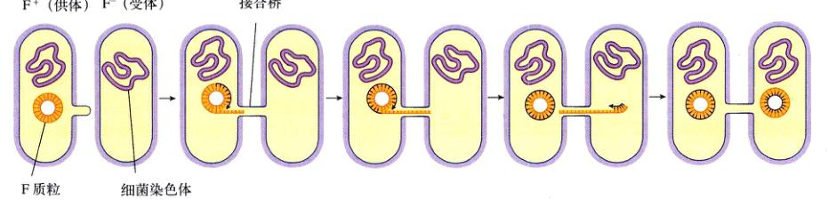图 18.26 细菌之间的基因传递 供体细胞含有 F 质粒，受体细胞没有。F 质粒复制后将拷贝通过连接桥传送。剩下的一条链作为复制的模板。当单链进入受体细胞，被当作模板复制出双链质粒。当整个进程结束后，两个细胞都有完整的质粒拷贝。
图 18.27 大肠杆菌染色体的接合图谱 科学家通过剧烈搅拌细胞悬液打断大肠杆菌的共轭桥架。通过在接合开始后不同时间的搅拌可以把不同的基因定位在染色体上。(a) 基因离复制起点越近，越需要早搅拌。(b) 用这种方法绘出的大肠杆菌接合图谱。
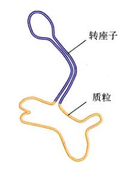图 18.28 转座子 转座子有特征性的“茎”和“环”状结构，被称为“巨头噬菌体 (lollipops)”，因为两端有反向重复的相同的核苷酸序列。这些末端结合在一起形成巨头噬菌体的“茎”。
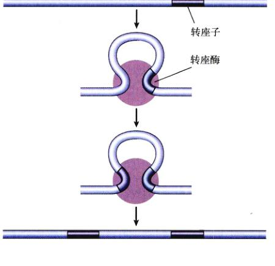图 18.29 转座 转座酶不能识别特定的 DNA 序列；相反，它随机选择一处序列，将转座子随机移动到某处。一些转座子在移动的时候还留下了自己的拷贝。
转座子编码一种叫做转座酶 (transposase) 的蛋白，它能把转座子插入到基因组中 (图 18.29)。转座酶不能识别基因组上的特定序列，因此转座子在基因组里的移动是随机的。
任何转座子的移动相对来说都是偶然的，可能每 10 万个细菌周期才发生一次。尽管这个频率很低，但还是比随机突变发生的概率高 10 倍。况且大多数细胞中都有很多转座子，因此经过一段较长的时间以后，转座会对进化产生深远的影响。
通过突变可以感受到这种影响。转座子插入某个基因后常会破坏该基因的功能，这种现象叫做插入失活 (insertional inactivation)。自然界中发生的很多自发突变 (spontaneous mutation) 都是这种插入失活引起的。
转座也可以促进基因移动 (gene mobilization)，即把处于基因组中不同位置的基因聚合到一处。例如在细菌中，不少基因编码的酶使细菌对抗生素 (如青霉素) 产生抵抗力，并且这些基因有很多是在质粒上。将细菌同时在多种抗生素存在的环境中培养几年前一种普通的医学试验，证实可以获得包含有多种抗药性基因的质粒。转座可以很快产生这样的复合质粒，即抗性转移因子 (resistance transfer factor, RTF)。把几个质粒上的耐药性基因转移到一个质粒上去，拥有 RTF 的细菌在多种抗生素作用下仍能存活。近来有些在医院里发生的金黄色葡萄球菌感染很难治愈，还有具有新抗药性的肺结核菌株的出现可能都与 RTF 有关。
产生基因重组的第二种主要机制是相互重组 (reciprocal recombination)，即在减数分裂过程中，两条同源染色体交换自身的部分或全部遗传物质。
正如第 12 章所述，交换 (crossing over) 发生在减数分裂的第一个前期，两条同源染色体并排排列在联会复合体内。这时，同源染色体在一处或者多个地方交换 DNA 链，这种交换可以产生具有新等位基因组合的染色体。 比如，设想一只长颈鹿在它的一条染色体上的两个不同位置分别有编码颈长度和腿长度的基因。进一步设想一只长颈鹿的长颈基因发生某种隐性突变，染色体经过了几轮独立的分配后产生具有纯合长颈等位基因的后代，另一只长颈鹿的长腿基因发生隐性突变，结果产生出具有纯合长腿等位基因的后代。 这两种突变几乎不可能同时发生在一只长颈鹿身上，因为两个独立事件同时发生的可能性等于它们各自发生可能性的乘积。如果自然发生在单个个体的这两种突变产生既有长脖子又有长腿的长颈鹿个体的惟一途径，那么出现我们在所见的一样只长颈鹿是绝对没有可能的。然而，由于重组现象的存在，两个基因中间部分发生交叉，就能在一次减数分裂过程中产生拥有两个变异基因的个体。快速地对基因组合进行重排发生重组的能力对自然变异个体的产生具有重要作用。
相互重组可以发生在两条同源染色体的任何部分，只要该处的核苷酸序列足够相似使得它们紧密配对。当一个序列的几份拷贝同时存在于一条染色体的不同部位时，偶尔也会发生配对错误。在这种情况下，一份序列拷贝可能与其重复拷贝配对，而不是与同源拷贝配对。这种错排引起滑脱配对，前面已经讨论过，滑脱配对导致碱基删除和读框移位突变。如果交换恰好发生在配对的地方，就会引起不等交换 (unequal crossing over)，因为两条同源染色体互相交换的序列长度不一样。 发生不等交换时，一条染色体得到多余的拷贝序列，而另一条染色体则丢失了这些拷贝 (图 18.30)。这个过程可以产生一条包含某个基因数百个拷贝的染色体，这些基因一个接一个串联起来。 因为大多数真核生物都拥有分散在染色体内的多个转座子拷贝，处于不同位置的转座子拷贝之间发生的不
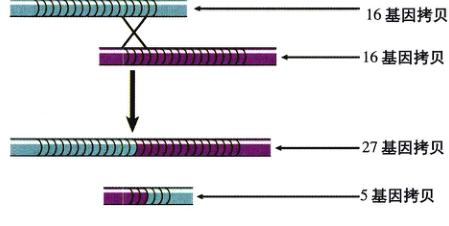图 18.30 不等交换 当一个重复序列的配对发生了错位，该部分的交换会产生一条基因拷贝较少的染色体和一条基因拷贝较多的染色体。在真核生物进化过程中发生的多基因重复可能就是这种不等交换的结果。
等交换已经对真核生物的基因组织产生重大影响。下面我们将会看到，真核生物的大多数基因在进化过程中都被重复过一次或更多次。
因为在联会复合体中配对的两条同源染色体不相同，一条染色体上的某些核苷酸与另一条上那些相应的核苷酸不互补。这些不匹配的核苷酸叫做错配 (mismatch pairs)。 正如你所想到的，细胞的纠错机制能检查出这些不配对碱基。如果在减数分裂进行时检查出不配对碱基，那么在 DNA 复制过程中校正新合成 DNA 链的酶可以修正这个错误。一条染色体上不配对碱基的核苷酸被切除，并用另一条同源染色体上相应位置的互补碱基替换，生成两条序列相同的同源染色体。错误一旦被修正，一条染色体上的错配序列就转换到另一条上，这一过程叫做基因转换 (gene conversion)。
1991 年报道了一新种的遗传物质变化方式，既不是核苷酸成分的改变 (突变)，也不是核苷酸序列位置的改变 (重组)，而是重复的三核苷酸序列拷贝数的增加，叫做三核苷酸重复 (trinucleotide repeats)。这种变化看来是
数量惊人的人类遗传疾病的根本原因。 由三核苷酸重复序列增加导致的最常见后果是发现于脆性 X 染色体综合征 (fragile X syndrome) 和脊髓性肌萎缩症 (spinal muscular atrophy) 患者。患者体内含有重复的三联体 (repeated triplet) 基因 (在脆性 X 染色体综合征是 CGG，在脊髓性肌萎缩症是 CAG) 拷贝数大量增加。比如，脆性 X 染色体综合征患者体内的 CGG 序列重复了数百次 (图 18.31)，而正常人只重复约 30 次。 现在已知，人体还有 10 个基因有这种三核苷酸重复增加的等位基因 (图 18.32)。这些等位基因大多 (但不全是全部) 富含 GC 核苷酸。一小部分等位基因看起来是正常的，但大多数都与遗传疾病有关，包括亨廷顿病 (Huntington's disease)、肌强直性营养不良 (myotonic dystrophy) 以及几种神经性共济失调 (neurological ataxias)。每种病的等位基因一般都以显性的方式遗传。这些重复序列经常位于基因的外显子上；但有些时候，如脆性 X 染色体综合征，重复序列显然位于第一个外显子不被翻译的头部、在编码区域的外部。此外，尽管重复序列在正常家族被稳定地遗传下去，一旦它的数目异常增加，还是会变得明显不稳定。这时子代的重复序列长度就变得异常。 随着重复数目的增加，疾病的严重程度也逐步增加。以脆性 X 染色体综合征为例，CGG 三联体的数目从正常的 5~55 个 (最常见的是含有 29 个重复三联体的等位基因) 增加到不稳定的 50~200 个，但没有什么能察觉出的影响。可是后代的重复三联体数目剧增，达到 200~1300 个，表现出明显的智力迟钝 (图 18.31)。类似的，肌强直性营养不良的等位基因正常情况下有 5 个 GTC 重复，轻度患者增加到约 50 个，重症病人增加到上千个。
三核苷酸重复是人类基因中的普遍现象，但是其作用还不清楚。人们目前还不知道其数量增加的机制，但这可能与不等交换有关，因为它能很快地产生大量拷贝，或者是 DNA 聚合酶在复制 DNA 过程中碰到三联体序列发生某种“打滑” (stutter) 机制，因为迄今为止从未出现过二核苷酸和四核苷酸重复数目的增加，这看来是一条重要线索。无疑今后关于这方面的研究还会有新发现。目前，人们的研究工作主要集中在这个令人颇感有兴趣的领域。
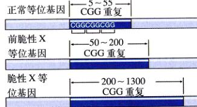图 18.31 脆性 X 等位基因的 CGG 重复 在正常等位基因中 CGG 三联体发生大约 30 次重复。含有脆性 X 等位基因的个体没有发病的明显特征，但 CGG 的重复数目增加。脆性 X 等位基因的 CGG 三联体重复数目达到数百次。
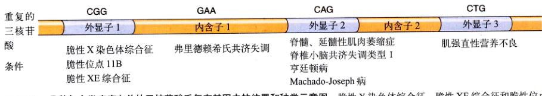图 18.32 几种与人类疾病有关的三核苷酸重复在基因中的位置和种类示意图 脆性 X 染色体综合征、脆性 XE 综合征和脆性位点 11B 的 CGG 重复出现在它们各自基因的第一个外显子中。GAA 重复是弗里德赖希氏共济失调的特征重复三联体，存在于基因的第一个内含子，包括亨廷顿病在内的 5 种疾病的基因在第二个外显子内存在 CAG 重复。最后，肌强直性营养不良基因在第三个外显子内含有 CTG 重复。
细菌的基因组相对简单，基因几乎都是以单拷贝形式存在。发生在它们环状染色体上重复转座因子的间的不等交换倾向于删除遗传物质，以保持最小的基因组 (图 18.33a)。由于这个原因，基因组被紧密地包裹起来，不起编码作用的核苷酸很少或者根本没有。请回忆一下第 16 章讲的 lac 基因组织是如何有效地利用空间的。
图 18.33 不等交换在细菌和真核生物产生不同后果 (a) 细菌的基因组是一个环状 DNA 分子，分子中的复制区域之间的交换删除了插入其间的遗传物质。(b) 真核生物每个染色体都有一个副本，交换为一条染色体添加遗传物质。
相反，真核生物由于有成对同源染色体的存在而与细菌截然不同。同源染色体之间的不等交换倾向于促进遗传物质的重复，而不是减少遗传物质 (图 18.33b)。结果，真核生物的 DNA 量比实际产生具有新特征基因组合的 DNA 量大得多。不等交换使基因发生进化，其中一些分化成不同的基因，然后继续发生重复和分化。
人们已经分出 4 类不同的真核基因，它们主要的区别在基因拷贝数。
(1) 单拷贝基因 (single-copy gene)：大多处于染色体上特定位置的真核基因以单拷贝形式存在。这些基因的突变产生隐性孟德尔式遗传 (recessive Mendelian inheritance)，由于突变而失活的沉默拷贝被称为假基因 (pseudogene)。
(2) 片段重复 (segmental duplication)：人类基因组的测序工作揭示，人类染色体上有很大的片段重复部分，该重复区域从一条染色体复制到另一条染色体。整个基因组都具有相同顺序的由相似基因构成的模块，表明片段重复是决定人类基因组有结构特征的因素。第 19 章染色体是最大的“债务人”，它与其他 16 条染色体共享基因片段。
(3) 多基因家族 (multigene family)：随着我们对真核基因组核苷酸序列了解加深，逐渐知道很多基因是作为基因家族的一部分存在的。多基因家族由聚集在一起相互关联但组成截然不同的一组基因组成。多基因家族与串联基因的区别在于前者包含的基因大小大小于后者，只有 3 到几十个，并且前者具有基因之间的差别远大于后者。尽管存在这些差别，多基因家族里的基因在序列上的相似性还是很明显，很可能源自共同的祖先，然后经过过一系列不等交换演化而来。例如，血红蛋白多基因家族进化的研究表明，血红蛋白基因的祖先至少有 8 亿岁！当现代鱼类进化出来的时候，这个基因已经发生过重复，形成了 α 型和 β 型。等到两栖类和爬行类出现分化的时候，这两个珠蛋白基因在染色体上分开，关于这一运动的机制还不了解，可能与转座有关。哺乳动物的珠蛋白基因还经过再次复制，才形成了现在人类染色体上 11 个珠蛋白基因排列。其中 3 个基因是沉默的，编码的蛋白质没有功能，其他基因在胚胎期 (ζ 和 ε) 和胎儿期 (γ) 表达，只有 δ、β、α1 和 α2 四个基因编码的多肽组成了成年体内的血红蛋白。
(4) 串联基因 (tandem cluster) 是第二类由多次重复的 DNA 组成的序列，一个拷贝接一个拷贝按顺序排列而成。细胞通过同时转录串联基因上的所有序列拷贝可获得大量编码产物。例如，编码核糖体 RNA 的基因以含有几百个拷贝的基因簇存在。
目前已完成几种真核生物基因组的测序工作，最显著的特点之一就是它们拥有非编码 DNA 数量。最近完成的人类基因组测序工作描绘了一幅令人惊诧的图画。你的每个细胞里有 6 英尺 (1.83m) 长的 DNA，但是其中只有不足一英寸 (约 2.5cm) 是基因！你之所以是你而不是别人，只跟这 1% 左右的基因有关，而其他将近 99% 的 DNA 几乎或者根本不起任何作用。 真正的基因分散在整个基因组里，被比它们数量多得多的非编码 DNA 包围，好像沙漠里零星的绿洲一样。人类的非编码 DNA 主要有 4 种 (表 18.6)：
(1) 基因中的非编码 DNA：正如第 15 章讨论过的，一个人的基因不仅仅包含一个单词的字母一般，而是由很多编码蛋白质的信息片段 (外显子) 镶嵌在更多的非编码 DNA (内含子) 组成的构架中。内含子约占人基因组的 24%，外显子约占 1.5%。
(2) 结构 DNA：染色体上的某些区域高度浓缩，紧紧地缠绕在一起，在整个细胞周期内都不被转录，这些部分叫做组成型异染色体 (constitutive heterochromatin)，分布在着丝点周围，或者接近染色体末端的端粒处。
(3) 重复序列：简单序列重复 (simple sequence repeats, SSRs) 分散于染色体中，一个 SSR 是由一个两核苷酸或三核苷酸 (如 CA 或 CGG) 序列重复成千上万次构成。SSR 约占人基因组的 3%；还有 7% 是其他形式的重复序列。
| 类 别 | 出现频率 | 特 点 |
|---|---|---|
| 蛋白质编码基因 | 1% | 分散在染色体中的 3 万个基因中的转录部分 |
| 内含子 | 24% | 非编码 DNA，组成人的基因的大部分 |
| 结构 DNA | 20% | 着丝粒和端粒附近的结构异染色质 |
| 重复序列 | 3% | 类似 CGG 的几个核苷酸间断性重复，重复数千次。 |
| 转座因子 | 45% | 20%—长散布元件 (LINEs)，为活性转座子。 |
| 15%—其余活性较小的转座因子，如 LTRs | ||
| 10%—拥有 50 万左右拷贝的寄生序列 ALU |
(4) 转座因子：人类基因组中足有 45% 是由叫做转座因子 (transposable element) 的可移动 DNA 片段构成。转座因子是 Barbara McClintock 在 1950 年发现的，她因此获得 1983 年诺贝尔奖。转座因子能从染色体上一个地方跳到另一个地方，是微小的分子世界中墨西哥跳豆的翻版。 它是如何实现这种非凡技巧的呢？尽管转座因子的转座机制的细节非常复杂，依转座因子类型的不同而有所不同，但基本过程非常简单。转座因子的两端具有相似的 DNA 序列，因此，一端的 DNA 链可以和另外一端配对，当这样的链与链之间的配对形成时，转座因子就变成了一个环。把一条带子的两端用墨水染黑，然后把黑色的部分联合在一起，你就会看到环是如何形成的。现在如果在有一个缺口出现在 DNA 环上，反转录酶 (reverse transcriptase) 可以以此环上的 DNA 作模板，复制出一条 RNA 拷贝，这条拷贝可以自由移动，进入染色体任何地方。 人染色体含有 5 种转座因子。20% 的基因组由“长散布元件 (long interspersed elements, LINEs)”构成。长散布元件是一种古老的并且进化很成功的因子，它大约有 6000 个 DNA 碱基那么长，拥有所有转座必需的成分，包括编码切开 DNA 环酶的基因和编码反转录酶的基因。 ALU 因子占人基因组的 10%，长散布元件里安置着超过 50 万个 ALU 拷贝。ALU 只有大约 300 个碱基长，自身不具有转座的机制，就像一条狗身上的跳蚤一样，跟着它所在的散布元件一起运动。跳蚤有时也会从一条狗身上跳到另一条狗身上，所以 ALU 可以利用长散布元件的酶跳到染色体的另一个位置。由于经常会正好跳进基因里面，ALU 转座常引起很多有害的突变。 人的基因组中还有其他 3 种转座因子：长末端重复序列 (long terminal repeats, LTRs)，也叫“反转座子” (retroposon)，占基因组的 8%；DNA 转座子 (DNA transposon) 占 3%，通过 DNA 而不是 RNA 复制；还有约 4% 是死转录因子，就是那些丢失了复制信号而不再能移动的因子。